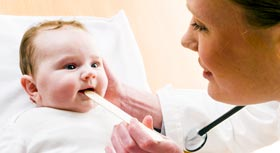

“生个娃娃掉颗牙”孕期你都要面临哪些牙齿问题？"Give birth to a baby tooth," you have to face during pregnancy which teeth problems?
-
- 妊娠牙周病
-
- 龋齿
-
- 敏感（牙本质敏感症）
-
- 阻生牙引发急性肿疡
专家点评：孕期之所以牙病高发，主要和准妈妈的身体激素变化以及孕期的口腔卫生习惯改变有关。数据统计表明，约一半的孕妇患有龋齿。由于妊娠期体内激素水平发生变化，加上饮食习惯和口腔卫生行为都有不同程度的改变，使孕妈妈们患口腔疾病包括龋齿、牙龈炎、牙本质敏感等的风险明显增加，严重者还会导致胎儿畸形，甚至流产、早产。所以，孕前进行口腔健康检查及孕期口腔保健都非常重要。
有问题，找专家孕期患牙病危险多多A lot of pregnancy with dental disease risk
怀孕第6周，胎儿的牙齿即开始发育；出生时，牙龈里面已形成20个乳牙的牙胚。准妈妈的龋齿、牙周病、牙龈病、拔牙，都会影响准妈妈进食、休息及营养摄入，从而影响胎儿的生长发育。更可怕的是，准妈妈牙周炎病灶中细菌所产生的毒素可能进入血液循环系统，通过胎盘屏障影响到胎儿。
-
- 增加胎儿生长受限和
低体重的危险
- 增加胎儿生长受限和
-
- 
- 影响孕期胎儿口腔器官的
发育和形成
-
- 炎症细菌加重妊娠反应
-
- 容易导致早产
孕期口腔保健门诊—助您拥有快乐孕期Oral care clinics during pregnancy - to help you have a happy pregnancy
各位准妈妈！现在加入深圳远东妇儿医院孕产一站式管理计划
即可享下列孕期口腔检查及指导服务且不收取任何费用。Dear mother! Now join shenzhen children's hospital, maternal far east one-stop management plan, you can
enjoy the following oral cavity during pregnancy and guidance services and do not charge any fee.
孕前
孕期
产后
-
- 孕前检查项目
- 牙龈炎、牙周病、智齿、龋齿等全面性的牙齿病变检查。
- 健康需知
-
- 1、牙龈炎：容易出现牙龈红肿，出血，疼痛等情况。
- 2、龋齿（即蛀牙）：易诱发急性牙髓炎或根尖炎，会给孕妇带来难以忍受的痛苦；龋齿较深时，遇到冷热酸甜刺激时，会产生强烈的疼痛感。
- 3、智齿：容易积留食物残渣，引起急、慢性炎症，严重时引起面部肿胀、疼痛难忍，甚至嘴都张不开。
- 4、洗牙：清除牙齿表面的牙菌斑，色素，牙垢等，减少孕期患牙周病的机会。
-
- 孕期检查项目
- 牙龈炎、牙周炎检查、牙齿保健宣教指导
- 健康需知
-
- 1、孕期前三个月和后三个月不做复杂牙齿治疗；
- 2、孕期如出现急、慢性牙齿炎症，牙龈红肿，出血，疼痛等情况，请及时就医，医生可对症进行应急处理。
-
- 产后检查项目
- 全面口腔检查
- 健康需知
- 产后妈妈的饮食一日多餐，且多卧床少运动，如果再不注意口腔卫生，最终形成龋齿或牙周病，产后还会出现牙齿松动等情况。